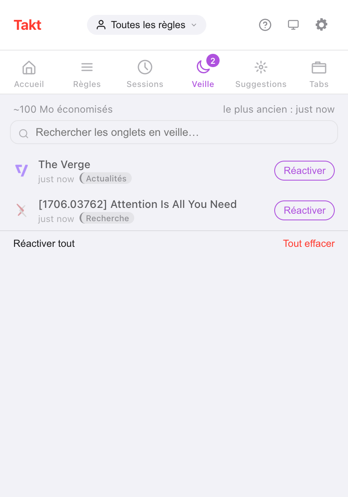

En bref : Takt gère les onglets inactifs en deux temps. Suspendre décharge un onglet mais le laisse dans la barre d'onglets. Hiberner le ferme et enregistre son état, pour le rouvrir en un clic.
- Free : suspension automatique après 15 minutes à 4 heures d'inactivité, une liste d'onglets à ne jamais suspendre, et l'hibernation manuelle de 5 onglets au maximum.
- Premium : hibernation automatique selon le temps d'inactivité, le nombre d'onglets par fenêtre ou la fin d'une planification, et jusqu'à 200 onglets en hibernation.
- Tout reste sur votre appareil. Aucun compte, aucune statistique d'usage.
Quelle différence entre suspendre et mettre en hibernation un onglet ?
Les deux libèrent de la mémoire. Ils diffèrent par ce que devient l'onglet.
| Suspendu | En hibernation | |
|---|---|---|
| Barre d'onglets | Reste, grisé | Disparaît, listé dans le volet Veille de Takt |
| Comment | Déchargement d'onglet propre à Chrome | Onglet fermé, état enregistré par Takt |
| Retour | Cliquez sur l'onglet ; la page se recharge | Cliquez sur Réactiver ; l'onglet se rouvre là où il était |
| Manuel | Recommandations de suspension (tableau de bord Premium) | Gratuit, jusqu'à 5 onglets |
| Automatique | Gratuit | Premium |
Comment mettre un onglet en veille à la main ?
- Installez Takt depuis le Chrome Web Store.
- Sur l'onglet à mettre de côté, ouvrez le popup de Takt et cliquez sur Mettre en veille. Ou faites un clic droit sur la page et choisissez Mettre cet onglet en veille.
- L'onglet se ferme, et Chrome affiche brièvement une notification « Onglet mis en veille ».
- Pour le récupérer, ouvrez le volet Veille du popup et cliquez sur Réactiver.
Takt enregistre l'URL, le titre, le favicon, le nom et la couleur du groupe, la fenêtre, la position dans la fenêtre, l'état épinglé, la position de défilement et l'heure de mise en hibernation. Réactiver rouvre l'onglet dans sa fenêtre, à son ancienne position, dans son groupe, à l'endroit où vous en étiez.
Si la même URL est déjà ouverte, Takt vous demande confirmation avant de réactiver l'onglet, pour éviter un doublon.

Le chiffre « ~100 Mo économisés » est une estimation forfaitaire : Takt compte 50 Mo par onglet en hibernation. Il ne mesure pas les onglets qu'il ferme.
Comment décharger automatiquement les onglets inactifs ?
La suspension automatique est gratuite et activée par défaut. Toutes les 5 minutes, Takt décharge les onglets inactifs depuis plus longtemps que votre seuil : 15 minutes, 30 minutes (par défaut), 1, 2 ou 4 heures. Réglez-le dans Options → Settings → Tab Lifecycle.
L'inactivité se mesure depuis la dernière fois que l'onglet a été actif ou a fini de se charger. Takt ne suspend jamais :
- l'onglet actif, ni un onglet encore en cours de chargement ;
- les onglets qui diffusent du son ;
- les onglets épinglés ;
- les onglets qui correspondent à votre liste Never suspend these tabs.
Cette liste accepte un motif par ligne, avec * comme joker. *://mail.google.com/* garde Gmail chargé. La liste protège aussi les onglets de tous les déclencheurs d'hibernation automatique décrits plus bas.

Chrome peut-il mettre les onglets en veille automatiquement ? Premium
Avec Premium, Takt dispose de trois déclencheurs :
- Temps d'inactivité. Un onglet déjà suspendu et inactif au-delà de votre délai est mis en hibernation. Choisissez entre 5 minutes et 7 jours ; la valeur par défaut est de 2 jours.
- Limite d'onglets. Quand une fenêtre dépasse votre limite (15 à 100 onglets, 30 par défaut), Takt met en hibernation ses onglets les moins récemment utilisés jusqu'à revenir à la limite. Fermez un onglet, et le dernier onglet mis en hibernation revient dans cette fenêtre. Chaque fenêtre est comptée séparément.
- Fin de planification. Une planification de profil peut mettre en hibernation tous les onglets éligibles à la fin de sa plage horaire. Activez Hibernate tabs when schedule ends dans Profiles.
Pour les déclencheurs d'inactivité et de limite d'onglets, Chrome affiche une notification avec un bouton Annuler pendant 10 secondes. Passé ce délai, l'onglet vous attend toujours dans le volet Veille.
Est-ce un nouveau Great Suspender ?
Question légitime. En 2021, Google a retiré The Great Suspender après la découverte de code malveillant dans une version publiée après sa revente. Beaucoup de gens ont cessé de faire confiance aux extensions de suspension d'onglets après cela.
Voici ce que Takt fait différemment, et ce que vous pouvez vérifier :
- Les onglets suspendus gardent leur véritable URL. Takt appelle la fonction de déchargement propre à Chrome. Il ne remplace pas votre page par une page d'extension : désinstaller Takt laisse donc vos onglets tels quels.
- Les onglets en hibernation restent sur votre appareil. Les enregistrements se trouvent dans le stockage local de Chrome. Ils ne quittent votre machine que si vous configurez vous-même la synchronisation Drive ou par dossier.
- Aucun compte, aucune statistique d'usage, aucune télémétrie. Les permissions supplémentaires sont facultatives et demandées seulement quand une fonctionnalité en a besoin. Voir comment Takt garde vos données en local.
Vous devez tout de même faire confiance à qui publie les mises à jour de chaque extension que vous installez. Lisez les permissions qu'elle demande.
L'Économiseur de mémoire de Chrome suffit-il ?
Souvent, oui. Si vous voulez seulement que les onglets en arrière-plan cessent d'utiliser de la mémoire, l'Économiseur de mémoire intégré à Chrome ne coûte rien et ne demande aucune extension.
Deux reproches reviennent sans cesse : les onglets se rechargent quand on y revient, et certains onglets inactifs ne s'endorment jamais. L'étape de suspension de Takt a le même inconvénient sur le premier point. Un onglet suspendu se recharge quand vous cliquez dessus, car il s'agit du même type de déchargement.
Ce que Takt ajoute, c'est le contrôle. Vous choisissez le seuil d'inactivité, vous listez les sites auxquels il ne doit jamais toucher, et l'hibernation retire complètement les onglets de la barre d'onglets tout en gardant un moyen de les retrouver.
Quelles sont les limites ?
| Free | Premium | |
|---|---|---|
| Suspension automatique et liste d'exclusion | Oui | Oui |
| Hibernation manuelle | Oui | Oui |
| Onglets en hibernation simultanés | 5 | 200 |
| Hibernation automatique selon l'inactivité, la limite d'onglets ou la planification | Non | Oui |
Les onglets épinglés et les onglets qui diffusent du son ne peuvent pas être mis en hibernation. Une fois votre limite atteinte, Takt refuse d'en mettre d'autres en hibernation tant que vous n'en avez pas réactivé ou effacé.
Mettez un onglet en veille. Réactivez-le exactement là où vous l'aviez laissé.
Ajouter Takt à Chrome, gratuitementQuestions fréquentes
Quelle différence entre suspendre et mettre en hibernation un onglet ?
Un onglet suspendu est déchargé mais reste dans la barre d'onglets, et se recharge au clic. Un onglet en hibernation est fermé ; Takt enregistre son état et le rouvre quand vous cliquez sur Réactiver.
Combien d'onglets puis-je mettre en hibernation gratuitement ?
5 à la fois avec le plan Free, 200 avec Premium (3 $/mois ou 30 $/an). La suspension automatique n'a pas de limite et est gratuite.
Takt est-il un nouveau Great Suspender ?
Takt suspend avec le déchargement propre à Chrome : les onglets gardent donc leur véritable URL. Les onglets en hibernation restent dans le stockage local de votre appareil. Aucun compte, aucune statistique d'usage, aucune télémétrie.
Les onglets en hibernation survivent-ils à un redémarrage du navigateur ?
Oui. Ils sont stockés sur le disque, pas en mémoire. Au démarrage, Takt supprime tout enregistrement dont l'URL est déjà rouverte.